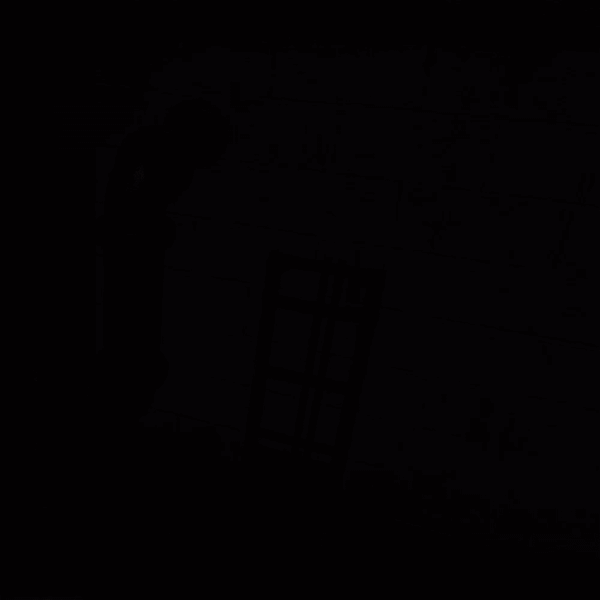

<

>
Nok is a 3D point and click finding object game I worked on through out 2025 I mainly worked as an environment artist, but also had the pleasure and opportunity to code some new features for the game